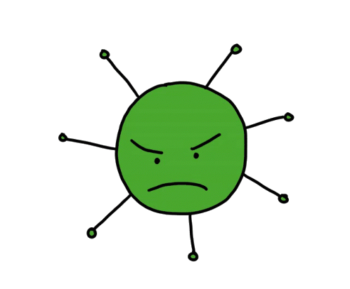

Bactreiology*TestCBCCRPBCUSSCTCDash------------------------------------------------------ResultUnitsg/dlcells/µlcells/µlmg/dlP / NP / NP / NP / NReferencs Range<12.511000-14500150000-450000<1NegetiveNegetiveNegetiveNegetiveBactreiology
Result :
CBC---------CRP---------BC---------US---------SC---------TC---------

میکروب شناسی
میکروب شناسی علمی است که به مطالعه میکروارگانیسمها به ویژه باکتریها، ویروسها، قارچها و
پارازیتها پرداخته و همچنین بر روی ساختار، عملکرد، رشد و تکامل این میکروارگانیسمها نیز تمرکز
دارد و با استفاده از آن می توان بیماریها، زیستفناوری، محیط زیست و بهداشت را بررسی کرد.